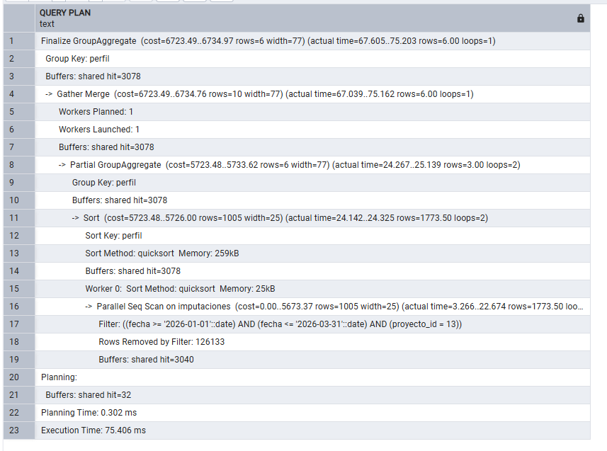
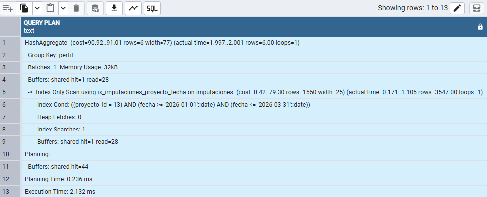

Seguimiento de 60 proyectos de TI: coste frente a presupuesto, hitos, semáforo y velocidad de los equipos Scrum. Va de la base de datos al informe, con datos sintéticos generados con Python.
Una página para dirección (semáforo y coste) y otra para el jefe de proyecto (velocidad sprint a sprint).
También le añadí un asistente para preguntar a los datos en lenguaje natural, por ejemplo «¿cuál fue el coste total en junio?». La IA convierte la pregunta en una consulta SQL sobre las mismas vistas de PostgreSQL, la base de datos devuelve el número y la IA redacta la respuesta. Así lo que dice el asistente cuadra siempre con el informe.
Trabaja con un usuario de solo lectura que solo ve las tres vistas, y antes de ejecutar nada se comprueba que la consulta es un único SELECT. Enseña el SQL que ha generado y los tokens de cada pregunta. Está publicado con Streamlit y Gemini, y también funciona con un modelo local para que los datos no salgan del equipo.
Si la demo lleva un rato sin uso, puede tardar unos segundos en arrancar.
El semáforo se calcula en una vista de PostgreSQL. Así da lo mismo en cualquier informe y se puede comprobar con una consulta.
WITH coste AS ( SELECT proyecto_id, SUM(coste) AS coste_real FROM imputaciones GROUP BY proyecto_id ), h AS ( SELECT proyecto_id, COUNT(*) FILTER (WHERE fecha_real > fecha_plan + 7) AS hitos_con_retraso, -- 1 semana de tolerancia COUNT(*) FILTER (WHERE fecha_real IS NULL AND fecha_plan < DATE '2026-09-21') AS hitos_vencidos FROM hitos GROUP BY proyecto_id ) SELECT p.codigo, p.presupuesto, co.coste_real, ROUND(co.coste_real / p.presupuesto - 1, 4) AS desviacion_coste, CASE WHEN co.coste_real / p.presupuesto > 1.10 OR h.hitos_vencidos >= 2 THEN 'Rojo' WHEN co.coste_real / p.presupuesto > 1.00 OR h.hitos_con_retraso >= 2 THEN 'Ámbar' ELSE 'Verde' END AS semaforo FROM proyectos p LEFT JOIN coste co USING (proyecto_id) LEFT JOIN h USING (proyecto_id);
Es la consulta que lanza el informe al filtrar un proyecto y un trimestre, sobre unas 256.000 filas. Medida con EXPLAIN (ANALYZE, BUFFERS).
-- igualdad primero, rango después; INCLUDE evita volver a la tabla (index-only scan) CREATE INDEX ix_imputaciones_proyecto_fecha ON imputaciones (proyecto_id, fecha) INCLUDE (perfil, horas, coste);


El script revisa duplicados, registros huérfanos y valores fuera de rango antes de cargar. Si algo falla, no carga nada: prefiero un informe de ayer a uno con datos mal.
def main(): datos = {t: leer(t) for t in TABLAS} errores = validar(datos) if errores: print("Validación fallida, no se carga nada:") for e in errores: print(" -", e) sys.exit(1) cargar(datos) # COPY de las 5 tablas en una sola transacción
Esto corre en local. Con Fabric lo montaría así:
| Pieza en local | Equivalente en Fabric | Por qué |
|---|---|---|
| cargar_postgres.py | Dataflow Gen2 conectado a PostgreSQL con gateway | La carga queda programada y a la vista del equipo |
| Validaciones en Python | Notebook que valida antes de escribir en el Lakehouse | Se mantiene el «si falla, no se carga» |
| Ejecución manual | Data Pipeline diario con alerta si falla | Si un día no se actualiza, alguien se entera |
| Vistas vw_* | Tablas en la capa gold del Lakehouse o Warehouse | El semáforo sigue en SQL |
| Importación en Power BI | Modelo semántico en modo Direct Lake | Sin copiar datos ni programar refrescos del modelo |
Desviación solo en proyectos cerrados. Al principio todos los sectores salían por debajo de presupuesto. Era engañoso: los proyectos en curso todavía no han gastado lo suyo. Mirando solo los cerrados, Defensa y Transporte tienen sobrecoste.
Una semana de margen en los hitos. Contando cualquier retraso de un día, el 65 % de la cartera salía en ámbar, y así el semáforo no ayuda a priorizar. Con 7 días de margen quedan 33 en verde, 19 en ámbar y 8 en rojo.